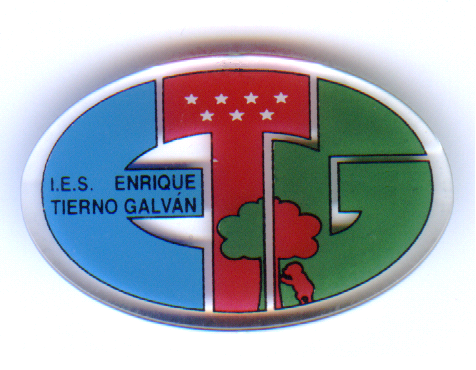

 Instituto Enrique Tierno Galván
Horario de mañana: de 8:30 a 14:30.
Recreo de 11:15 a 11:45.
Horario vespertino: de 15:30 a 21:30.
Recreo de 18:15 a 18:45.
Teléfono: 91 317 00 47
Esta página recogerá las aportaciones y modificaciones realizadas por los alumnos del Centro.
Enseñanzas
- Educación Secundaria Obligatoria
- Primero de E.S.O.
- Segundo de E.S.O.
- Tercero de E.S.O.
- Cuarto de E.S.O.
- Bachillerato
- Ciencias y Tecnología(por la mañana)
- Humanidades y Ciencias Sociales(por la mañana)
- Ciclos de Grado Medio
- Equipos electrónicos de consumo(por la mañana)
- Instalaciones eléctricas y automáticas(por la mañana)
- Instalaciones de producción de calor(por la mañana; solo 2º curso)
- Instalaciones frigoríficas y de climatización(por la mañana; solo 2º curso)
- Instalaciones de producción de calor, frigoríficas y de climatización(por la mañana y por la tarde)
- Carrocería(por la mañana)
- Ciclos de Grado Superior
- Administración de sistemas informáticos en red(por la tarde)
- Desarrollo de aplicaciones web(por la mañana)
- Mantenimiento de instalaciones térmicas y de fluidos(por la tarde)
- Automoción(por la tarde)
- Programas de Cualificación Profesional Inicial
- Operaciones auxiliares de montaje de instalaciones en edificios(por la tarde)
- Operaciones de fontanería y calefacción-climatización(por la tarde)
- Operaciones auxiliares en mantenimiento de vehículos(por la tarde)